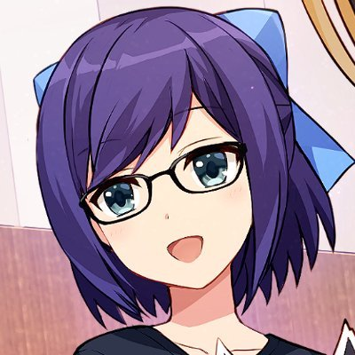
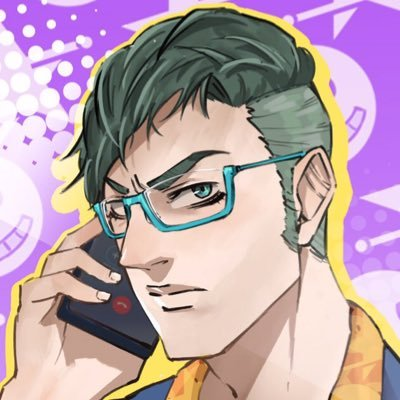
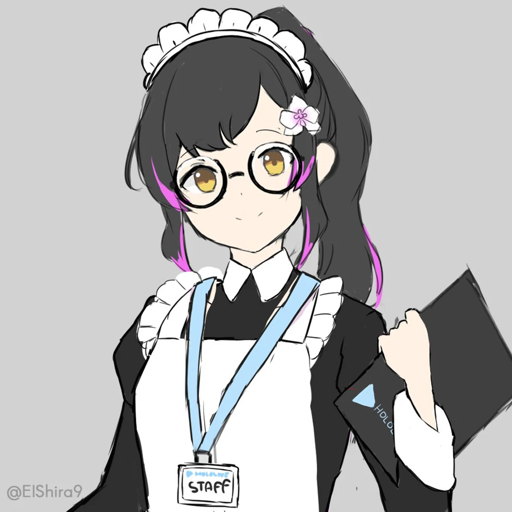
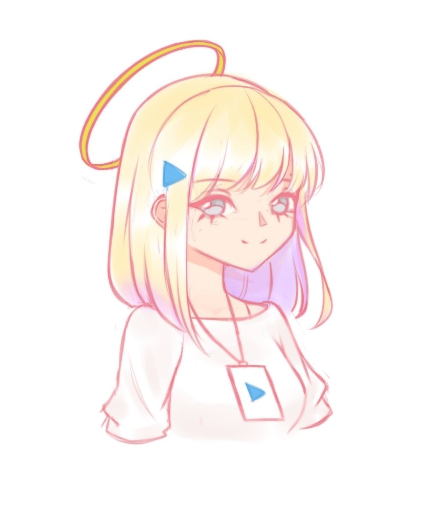
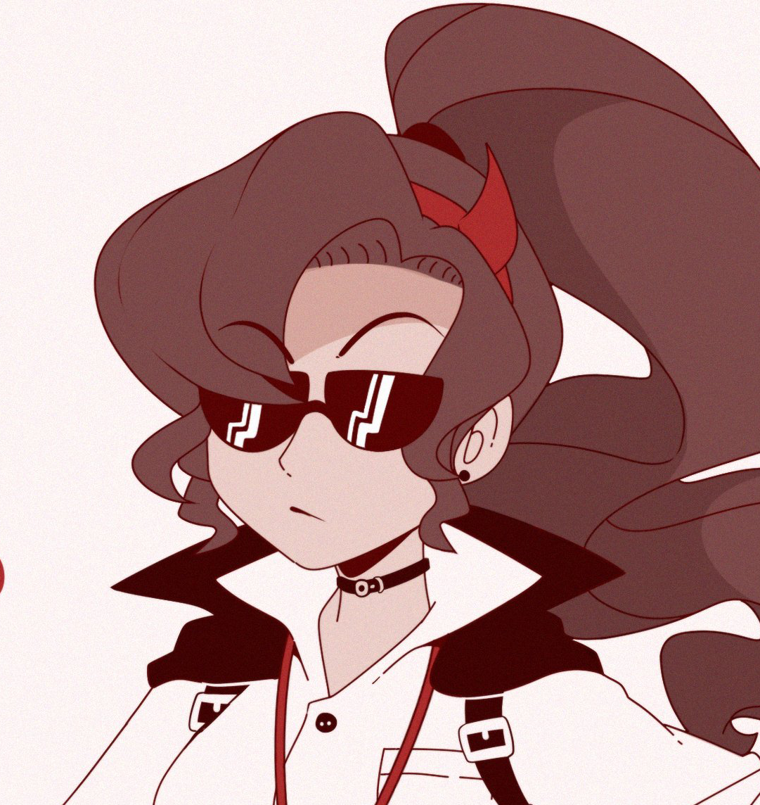

Hololive Production (ホロライブプロダクション Hororaibu Purodakushon), or simply known as hololive (ホロライブ), is a Virtual Idol agency consisting of Virtual YouTubers supported and created by Cover Corp.
As of May 2021, hololive-affiliated talents surpassed the mark of 40 million subscribers on Youtube.
On 13 June 2019, they announced the start of the audition for the third generation of hololive VTubers, called hololive Fantasy (ホロライブファンタジー). The audition started from 13 June until 23 June, with the screening starting and ending a day later and the interviews being held from 14 June until 28 June. During hololive karaoke party on 7 July, two of the members, Usada Pekora and Uruha Rushia, were announced.
On 25 December, the fourth generation was announced.
On 20 March, hololive's Twitter account announced auditions, which were held from 20 to 30 March, for two new members.
On 23 April, hololive's English Twitter account announced the beginning of auditions for English speaking VTubers and that their official site would support said language.
On 3 July, hololive Indonesia Twitter account announced auditions for its second generation, from 3 July to 19 July.
On 6 August, hololive's Twitter account announced the introduction of its fifth generation, none of whom were members open for audition during March.
On 8 September, hololive's English Twitter account introduced the first members of "hololive English" and a new hololive English channel created to promote their content, with a creation date of September 7th.
On 30 November, hololive's official Twitter account announced the start of auditions for VSingers for hololive English; auditions were open until 29 January JST.
On 1 December, hololive's Indonesia Twitter account announced the debut dates of its second generation members.
With the retirement of Rosalyn on 27 December, hololive China officially ended its activities.
On 12 February, hololive English Twitter account announced the audition for its second generation, with the audition going from 12 February to 26 March.
| Motoaki Tanigo (YAGOO) (Cover/Parent company CEO) |
A-chan (Editor) |
Daidou Shinove (Holostars' manager) |
MaID-chan (Manager ID) |
EnMa (Ina's manager) |
JenMa (Amelia, Gura, and, Kiara's manager) |
J-chad (Calli's manager) |
|---|---|---|---|---|---|---|
|  |  |  |  |
 |  |